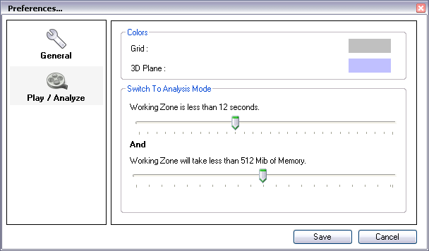

Number of files in history : Choose the number of files visible in the menu File > Recent.
Time markers format : Choose the time marker format for all timed data.
Format
Example
Meaning
Classic
0:05:25:76
0 hour, 5 minutes, 25 seconds, 76 hundredth.
Frames Numbers
8144
Image #8144 in video.
Ten thousandth of an hour
904
904 Ten thousandth of an hour.
Hundredth of a minute
542
542 Hundredth of minutes.
2. Play/Analyze Preferences.

Grid and 3D Plane Colors : Choose a color for each type of grid by clicking on the colored rectangle.
Parameter for Analysis Mode switch :
The "Analysis Mode" is the name of a working mode of Play/Analyze screens. In the typical case of a rather long video, images are extracted from file on the fly, one after another. This
process is to be repeated at each move or during play, it can be time
consuming and is dependant on the file's encoding profile.
If the Working Zone is short enough, Kinovea get all the frames beforehand and store them in memory. Image access is way faster and becomes independant from format and encoding profile. As the images are duplicated in memory, we can also modify them without interfering with the original file. This is how most of the commands in the Image menu (Color adjustment, Mirror) becomes available.
This
beforehand load and storing (the Analysis Mode) requires much more
memory than the standard way of work, but offer an incomparable
experience.
Duration and memory load sliders let you control the switching from one mode to the other. Both conditions specified need to be true for Kinovea to use the Anlaysis Mode.
For an example of this concept, watch the help video "Visualisation - First Approach".